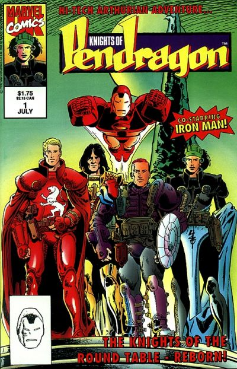

Two series with the same name by the same publisher one right after the other, but there does not seem to be any connecting storyline or characters.
1990: Commander Dai Thomas is brought to the HQ of the Weird Happenings Organisation for a briefing on a series of mysterious murders in "Brands & Ashes." Alistaire Stuart, Alysande Stuart, Captain Britain. Written by Dan Abnett & John Tomlinson. Illustrations by Gary Erskine, Andy Lanning. Cover by Alan Davis.

1992: "Quest World!"
Script by Dan Abnett and John Tomlinson, pencils by Phil Gascoine, inks by Adolfo Buylla; Mys-Tech's dimension hopping mercenaries have discovered Avalon and the Pendragons; Mys-Tech wants their power; On our Earth, Union Jack is caught up in a robot rebellion at Tony Stark's theme park, Quest World.